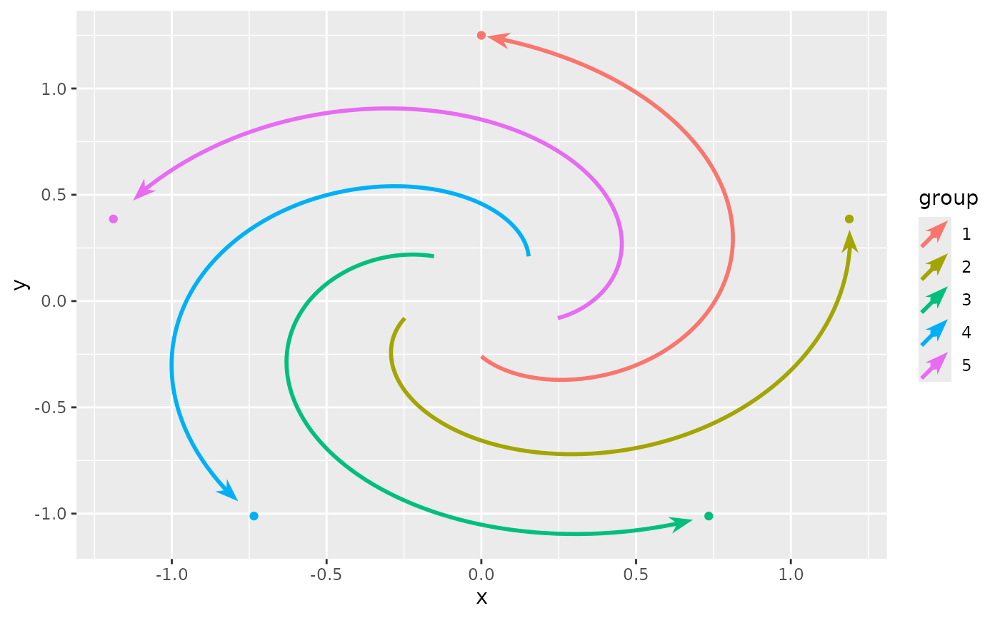
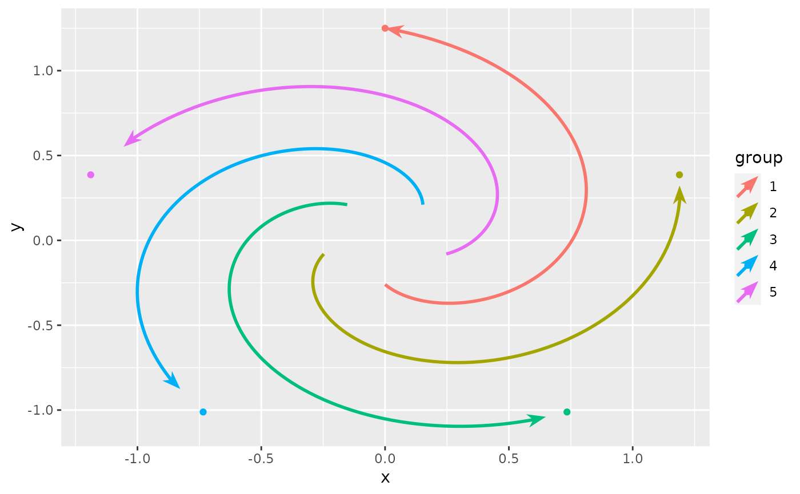
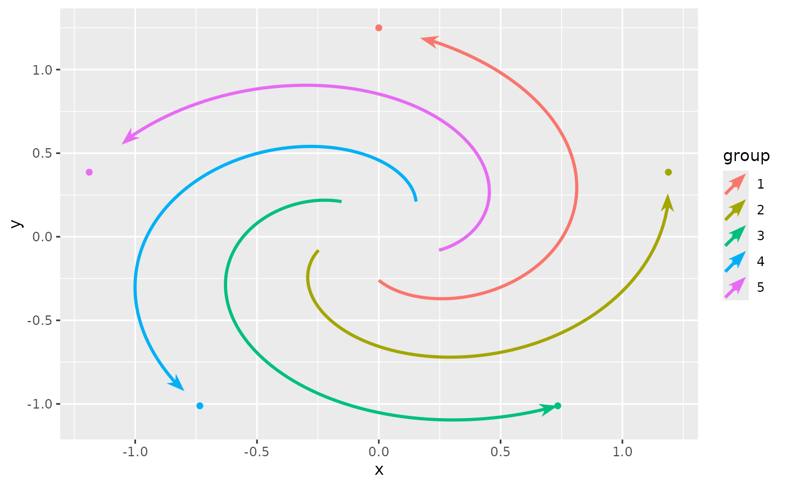
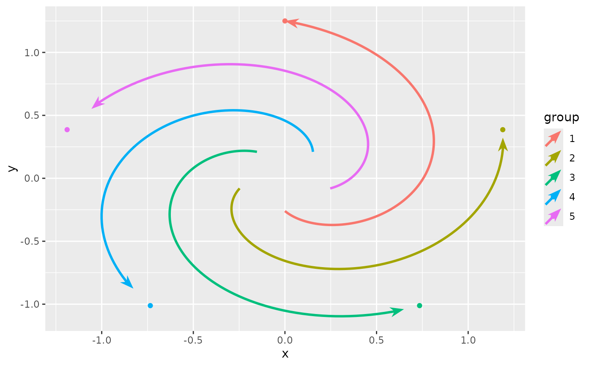

Arrow geoms have a resect aesthetic that controls how much an arrow should
be shortened. These scales can help to rescale the output range of resection.
Arguments
- ...
Arguments passed on to
ggplot2::continuous_scale,ggplot2::discrete_scalenameThe name of the scale. Used as the axis or legend title. If
waiver(), the default, the name of the scale is taken from the first mapping used for that aesthetic. IfNULL, the legend title will be omitted.breaksOne of:
NULLfor no breakswaiver()for the default breaks computed by the transformation objectA numeric vector of positions
A function that takes the limits as input and returns breaks as output (e.g., a function returned by
scales::extended_breaks()). Note that for position scales, limits are provided after scale expansion. Also accepts rlang lambda function notation.
minor_breaksOne of:
NULLfor no minor breakswaiver()for the default breaks (none for discrete, one minor break between each major break for continuous)A numeric vector of positions
A function that given the limits returns a vector of minor breaks. Also accepts rlang lambda function notation. When the function has two arguments, it will be given the limits and major break positions.
n.breaksAn integer guiding the number of major breaks. The algorithm may choose a slightly different number to ensure nice break labels. Will only have an effect if
breaks = waiver(). UseNULLto use the default number of breaks given by the transformation.labelsOne of the options below. Please note that when
labelsis a vector, it is highly recommended to also set thebreaksargument as a vector to protect against unintended mismatches.NULLfor no labelswaiver()for the default labels computed by the transformation objectA character vector giving labels (must be same length as
breaks)An expression vector (must be the same length as breaks). See ?plotmath for details.
A function that takes the breaks as input and returns labels as output. Also accepts rlang lambda function notation.
limitsOne of:
NULLto use the default scale rangeA numeric vector of length two providing limits of the scale. Use
NAto refer to the existing minimum or maximumA function that accepts the existing (automatic) limits and returns new limits. Also accepts rlang lambda function notation. Note that setting limits on positional scales will remove data outside of the limits. If the purpose is to zoom, use the limit argument in the coordinate system (see
coord_cartesian()).
rescalerA function used to scale the input values to the range [0, 1]. This is always
scales::rescale(), except for diverging and n colour gradients (i.e.,scale_colour_gradient2(),scale_colour_gradientn()). Therescaleris ignored by position scales, which always usescales::rescale(). Also accepts rlang lambda function notation.oobOne of:
Function that handles limits outside of the scale limits (out of bounds). Also accepts rlang lambda function notation.
The default (
scales::censor()) replaces out of bounds values withNA.scales::squish()for squishing out of bounds values into range.scales::squish_infinite()for squishing infinite values into range.
expandFor position scales, a vector of range expansion constants used to add some padding around the data to ensure that they are placed some distance away from the axes. Use the convenience function
expansion()to generate the values for theexpandargument. The defaults are to expand the scale by 5% on each side for continuous variables, and by 0.6 units on each side for discrete variables.na.valueMissing values will be replaced with this value.
transformFor continuous scales, the name of a transformation object or the object itself. Built-in transformations include "asn", "atanh", "boxcox", "date", "exp", "hms", "identity", "log", "log10", "log1p", "log2", "logit", "modulus", "probability", "probit", "pseudo_log", "reciprocal", "reverse", "sqrt" and "time".
A transformation object bundles together a transform, its inverse, and methods for generating breaks and labels. Transformation objects are defined in the scales package, and are called
transform_<name>. If transformations require arguments, you can call them from the scales package, e.g.scales::transform_boxcox(p = 2). You can create your own transformation withscales::new_transform().trans![[Deprecated]](figures/lifecycle-deprecated.svg) Deprecated in favour of
Deprecated in favour of
transform.positionFor position scales, The position of the axis.
leftorrightfor y axes,toporbottomfor x axes.callThe
callused to construct the scale for reporting messages.na.translateUnlike continuous scales, discrete scales can easily show missing values, and do so by default. If you want to remove missing values from a discrete scale, specify
na.translate = FALSE.dropShould unused factor levels be omitted from the scale? The default,
TRUE, uses the levels that appear in the data;FALSEincludes the levels in the factor. Please note that to display every level in a legend, the layer should useshow.legend = TRUE.
- range
A numeric vector of length 2 indicating the minimum and maximum size of the resection after transformation in millimetres.
rangeis mutually exclusive with thevaluesargument in discrete scales.- aesthetics
The names of the aesthetics that this scale works with.
- guide
A function used to create a guide or its name. See
guides()for more information.- values
(Discrete scale only) A numeric vector to map data values to. The values will be matched in order with the limits of the scale, or with
breaksif provided. If this is a named vector, the values will be matched based on the names instead. Data values that don't match will be givenna.value.valuesis mutually exclusive with therange
Details
Conceptually, these scales depart slightly from ggplot2 conventions. The
scale_resect_continuous() function returns an identity scale
when range = NULL (default) and a typical continuous scale when the
range argument is set.
The scale_resect_discrete() acts as a manual scale when values is set
and as an ordinal scale when range is set.
Examples
# A plot with points indicating path ends
p <- ggplot(whirlpool(5), aes(x, y, colour = group)) +
geom_point(data = ~ subset(.x, arc == ave(arc, group, FUN = max)))
# Resect scale as an identity scale
p + geom_arrow(aes(resect_head = as.integer(group))) +
scale_resect_continuous()

# Resect scale as typical continuous scale
p + geom_arrow(aes(resect_head = as.integer(group))) +
scale_resect_continuous(range = c(0, 10))

# Resect scale as manual scale
p + geom_arrow(aes(resect_head = group)) +
scale_resect_discrete(values = c(10, 5, 0, 5, 10))

# Resect scale as ordinal scale
p + geom_arrow(aes(resect_head = group)) +
scale_resect_discrete(range = c(0, 10))
